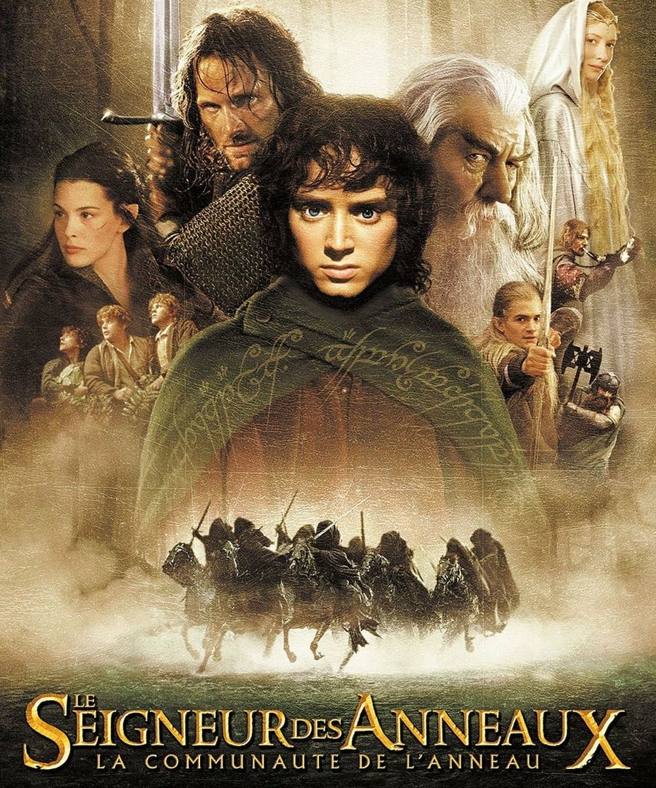
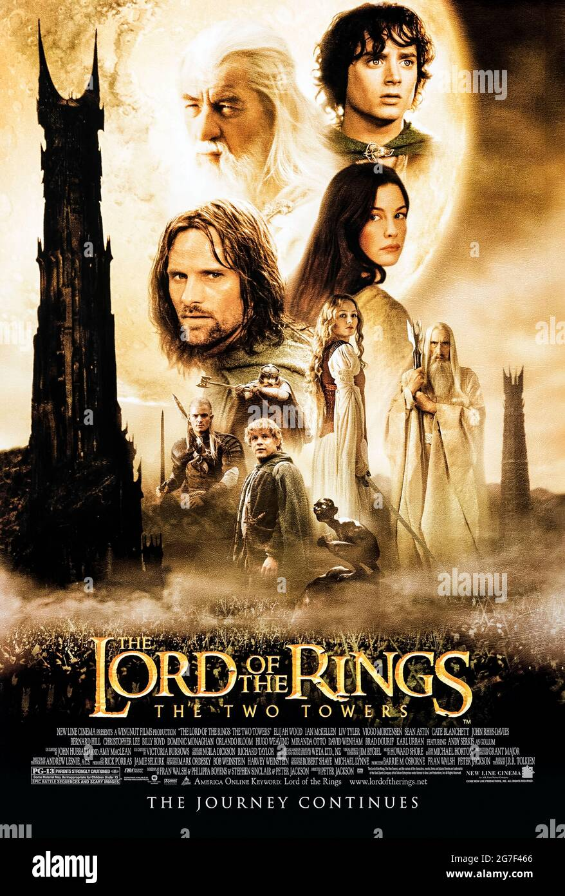

Le Seigneur des anneaux est une trilogie cinématographique américano-néo-zélandaise de fantasy réalisée par Peter Jackson et fondée sur le roman du même nom en trois volumes de J. R. R. Tolkien. Les films composant cette trilogie sont La Communauté de l'anneau, Les Deux Tours et Le Retour du roi.
Un jeune et timide Hobbit, Frodon Sacquet, hérite d'un anneau magique. Bien loin d'être une simple babiole, il s'agit d'un instrument de pouvoir absolu qui permettrait à Sauron, le "Seigneur des ténèbres", de régner sur la Terre du Milieu et de réduire en esclavage ses peuples. Frodon doit parvenir, avec l'aide de la communauté de l'anneau, jusqu'à la "Crevasse du Destin" pour le détruire.
Après la mort de Boromir et la disparition de Gandalf, la Communauté s'est scindée en trois. Perdus dans les collines d'Emyn Muil, Frodon et Sam découvrent qu'ils sont suivis par Gollum, une créature versatile corrompue par l'Anneau. Celui-ci promet de conduire les Hobbits jusqu'à la Porte Noire du Mordor. A travers la Terre du Milieu, Aragorn, Legolas et Gimli font route vers le Rohan, le royaume assiégé de Theoden. Cet ancien grand roi, manipulé par l'espion de Saroumane, le sinistre Langue de Serpent, est désormais tombé sous la coupe du malfaisant Magicien. Eowyn, la nièce du Roi, reconnaît en Aragorn un meneur d'hommes. Entretemps, les Hobbits Merry et Pippin, prisonniers des Uruk-hai, se sont échappés et ont découvert dans la mystérieuse Forêt de Fangorn un allié inattendu : Sylvebarbe, gardien des arbres, représentant d'un ancien peuple végétal dont Saroumane a décimé la forêt...
Les armées de Sauron ont attaqué Minas Tirith, la capitale du Gondor. Jamais ce royaume autrefois puissant n'a eu autant besoin de son roi. Cependant, Aragorn trouvera-t-il en lui la volonté d'accomplir sa destinée ? Tandis que Gandalf s'efforce de soutenir les forces brisées de Gondor, Théoden exhorte les guerriers de Rohan à se joindre au combat. Cependant, malgré leur courage et leur loyauté, les forces des Hommes ne sont pas de taille à lutter contre les innombrables légions d'ennemis.

Ma scene prefere des films :